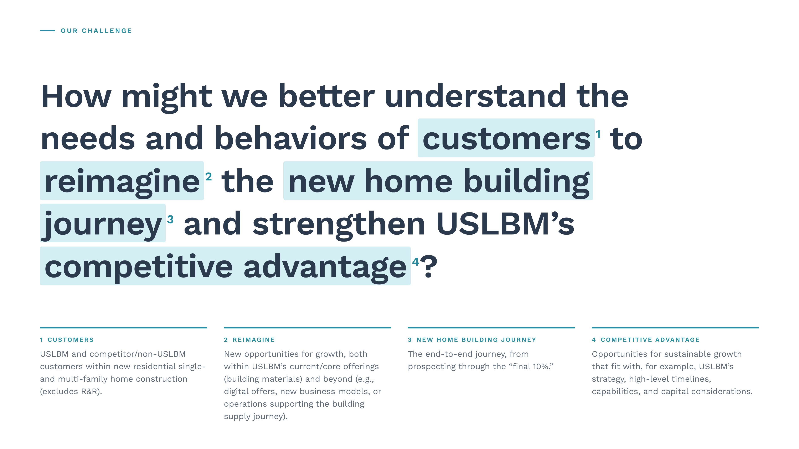
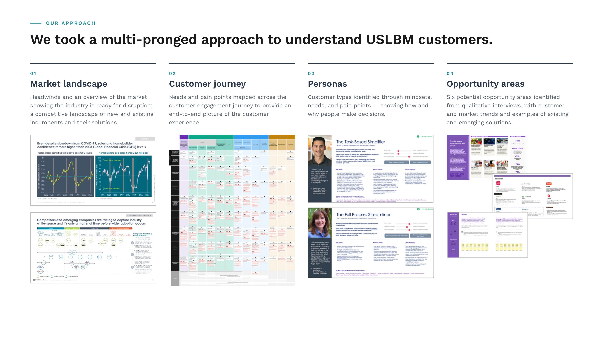
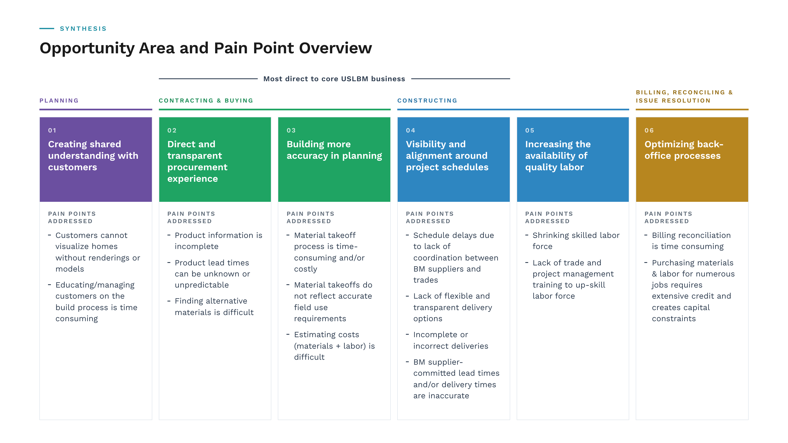
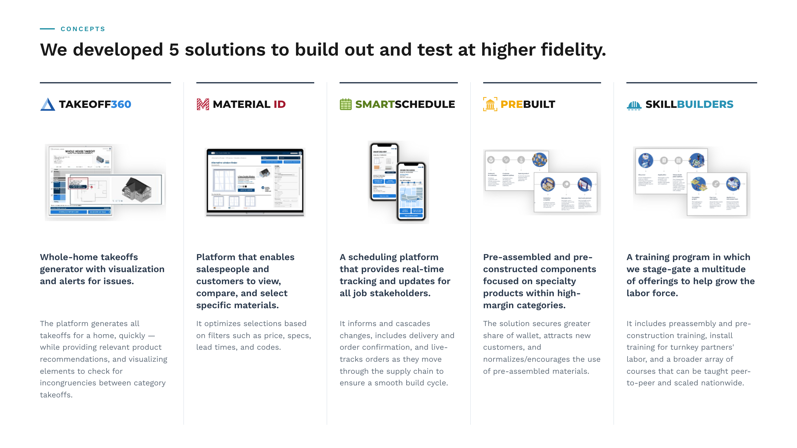
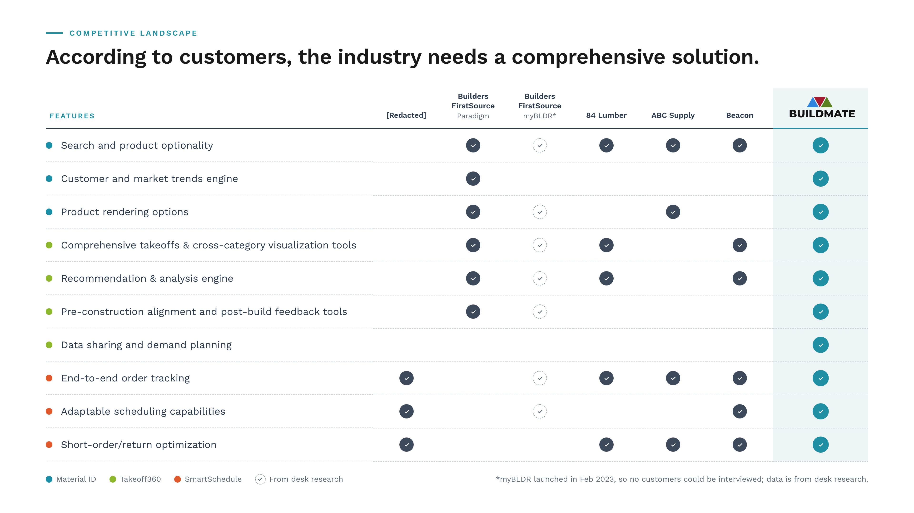
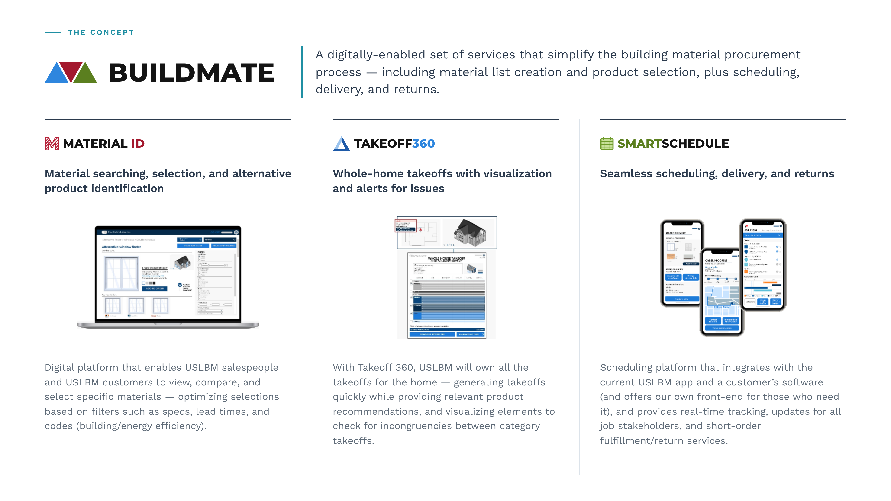
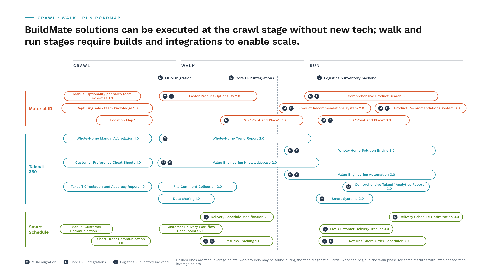

Material selection, takeoff creation, and delivery scheduling made easy.
The processes required for new-home construction are opaque, fragmented, and almost entirely manual. BuildMate is a digital platform designed to give builders, GCs, subcontractors, procurement teams, and homebuyers a shared, real-time view to build trust.
Jump to results ↓After over 100 acquisitions since being founded in 2009, [Redacted National Building Materials Distributor] realized it lacked a clear understanding of its brands’ customers and their needs.
They tasked us to research the needs of architects, builders, GCs, and sub-contractors across their national footprint to identify key segments, distinct journey maps, and where shared pain points create new opportunities for new digital platforms.

We ran 77 qualitative interviews in the Northeast, Midwest, and Southeast spanning builders, architects, procurement leads, GCs, and subcontractors across custom-semi-custom, multi-family, and production builds. After validating our findings with a 1,200-participant nationwide survey, we mapped distinct archetypes, personas, and journey maps through the 12+ month build cycle.
![Research footprint. Sprint 1: 77 customer interviews across the West (30), Midwest (21), and Southeast (26), mapped by state; 39 existing and 38 non-[Redacted National Building Materials Distributor] customers; build types 18 custom, 6 semi-custom, 19 multi-family, 33 production; roles including 13 GC owners, 9 architects, 15 building executives, 16 procurement executives, 9 GCs employed by builders, and 15 subcontractors. Sprint 2: research objectives and activities — a nationwide survey of 1,200 customers and concept testing with 8 repeat customers.](assets/images/miter_research-footprint-slide-v2.png)


Suppliers tend to prioritize bigger/national accounts. Mid-size builders don't have visibility into supply availability.Production, Superintendent at Adam Homes
We conducted a robust synthesis to outline key pain points and opportunity areas. From here, we facilitated a full-day workshop with clients based on the 6 opportunity areas cited above. This resulted in more than 100 ideas to address the needs of [Redacted National Building Materials Distributor]’s customers, which we ultimately narrowed to 5 concepts that we built out and tested at a higher fidelity.

After testing these concepts with customers, we narrowed in on Material ID, Takeoff 360, and SmartSchedule — ultimately combining these products into a super-app for full service. We then conducted a competitive scan that plotted players in the building-materials industry, in order to identify where differentiation is defensible.

- Developed research plan for discovery in 3 key US markets, encompassing 77 customers across segments
- Oversaw facilitation and synthesis of qualitative interviews, and developed quantitative survey based on these findings
- Developed and led an ideation workshop with our clients, resulting in over 100 ideas
- Led concept and feature development for BuildMate, including our pitch content for executives and our testing roll-out
- Challenged the team to explore concepts that push “expected” boundaries by creating transparency between providers and customers in a traditionally opaque industry
The concept landed as three connected solution pillars covering the moments where the build most often breaks down. Material ID turns sales teams’ knowledge of products and substitutions into a searchable, point-and-place tool. Takeoff 360 aggregates whole-home material lists and value-engineering options so estimates are faster, more accurate, and collaborative. Smart Schedule connects delivery workflows to jobsites with live communication and a delivery tracker that customers can actually see.
Each pillar was sequenced into a crawl-walk-run roadmap — starting with manual and lightly-tooled versions that can be adopted by [Redacted National Building Materials Distributor] today, then layering in MDM migration, ERP integrations, and a logistics backend to unlock analytics, recommendations, and automation tiers at scale.


Results
At concept handoffFor Material ID.
For Takeoff 360.
For SmartSchedule.
Concepts approved for internal build at [Redacted National Building Materials Distributor].